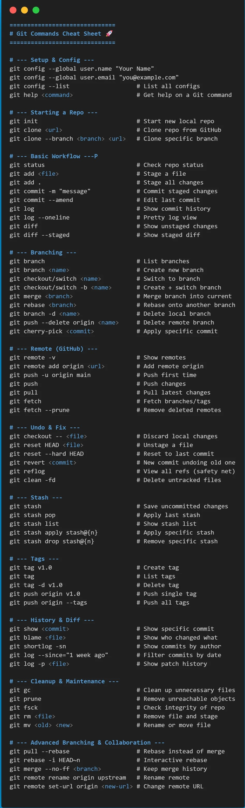

Comandos Base
Veja aqui
-
git --version
//comando basico só pra ver a versão do git -
git init git init -b batata
//isso inicializa a pasta atual como um repositório
//ja o segundo comando define o repositorio com uma branch chamada batata -
git config --global user.name "Ze das couve"
git config --global user.email "zedascouve@out.com"//definir suas config para seu git -
git status
//mostra o status atual do repositório -
git show
git show --no-patch --pretty=%s HEAD
//git show mostra um commit com sua mensagem, seus metadados e o diff que ele alterou
//o show monstruoso ali é pra mostrar somente a mensagem
Adicionar e Commitar
Veja aqui
-
git add arquivo
git add *.html
git add .
//git add com arquivo adiciona ele ao stage
//git add *.html adiciona todos os arquivos html da pasta que voce esta
//git add . adiciona tudo que esta na pasta -
git commit -m "mensagem"
//isso sobre os arquivos preparados para o repositorio github, o -m é o que permite colocar uma mensagem ao lado -
git log
git log --oneline
git log --reverse
//mostra os commits feitos no repositorio, git oneline mostra o mesmo só que mais compactado e reverse aparece do mais antigo pro mais novo
Checar alterações
Veja aqui
-
git diff
git diff --staged
//isso mostra as alterações que foram feitas antes de ir pro stage,linhas removidas aparecem com - e inseridas com +
//git diff staged mostra os que estão no stage -
.gitignore
*.log
logs/*.tmp
!important.log
//*.log ignora todos os arquivos .log
//logs/*.tmp ignora arquivos .tmp dentro de log, isso é util pra vc usar o add . sem adicionar arquivos inuteis
//!important.log faz o arquivo que seria ignorado nao ser ignorado -
git check-ignore -v build/output.txt
//isso é util pra quando um arquivo apareceu ou não no status, faz vc não se perder, tem essa saida
.gitignore:1:build/ build/output.txt
//lembre-se este é um teste entao use git check-ignore -v "algo", nesse algo coloque o quer checar
// se quiser modo mais rapido use: git check-ignore * -